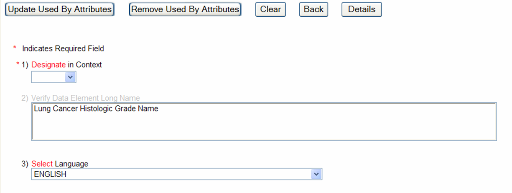
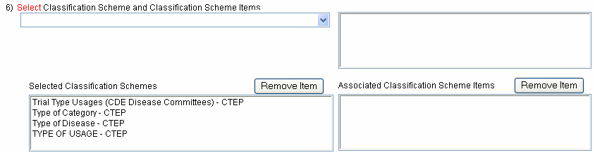
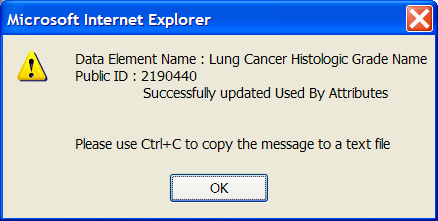

Before you go to the trouble of creating a new Data Element in your Context, you may choose to Designate an existing Data Element instead. Designating means that you have identified a Data Element in another Context that is appropriate for reuse. In other words, you are willing to use it for your curation needs, but it was created and will be maintained by another Context. The designated Data Element is now being ‘Used By’ your Context. A complete listing of Designation rules can be found on the NCI Center for Bioinformatics Business Rules page.
- Only Data Elements with the following Workflow Statuses can be designated: APPRVD FOR TRIAL USE, CMTE APPROVED, CMTE SUBMTD USED, DRAFT MOD, RELEASED, OR RELEASED-NON-CMPLNT.
- You are designating to a current version of a Data Element. If the owning context creates a new version of the Data Element, your "designation" remains associated to the previous version.
- If you designate a Data Element to your Context, you will have write privileges for only a few attributes for that Data Element in its current version. All other changes to the Data Element will be the responsibility of the "owning" Context. This is usually the Context for which the Data Element was originally created.
Designate a Data Element(s) using the CDE Curation Tool:
- Use the Search feature to locate the Data Element(s) that you would like to designate.
- Select the desired Data Element(s) from the search results by clicking the box next to the Data Element's name.
- Click the button at the top of the main search screen. This will open the Designations screen. All the currently designated items will appear in the appropriate fields. Figure 1 illustrates where to find the Designations button.

FIGURE 1
Designations Button
i Use the Designations button to block designate multiple Data Elements at the same time.
Designations
On the Designations screen you have the opportunity to Designate or Undesignate a Data Element for your Context. You may also Create and/or Remove Alternate Names and Select and/or Remove Classification Schemes/ Classification Scheme Items for the selected Data Elements(s). Figure 2 is an overview of the Designations screen.

FIGURE 2
Designations Screen Overview
Actions performed on the Designations
screen include:
- Designate or Undesignate Data Elements for use in a Context.
- Create or Remove Alternate Names.
- Select or Remove Classification Schemes and Classification Scheme Items.
The first step for creating designations or any other "Used By" attributes is to select a designation Context. This is done by selecting a Context from the first drop down list. The Contexts in the drop down list vary from user to user depending on the Context(s) for which they have permissions. Figure 4 shows how to select the "Used By" Context for the Designated Data Element.

FIGURE 3
Select A Context
Designate a Data Element to the
selected Context:
- Select a Context from the drop down list .
- Click the action button to Designate the Data Element to the selected Context.
Undesignate a Data Element to the
selected Context:
- Select a Context from the drop down list ( .
- Click the action button to Undesignate the Data Element from the selected Context.
When there is a need to assign an Administered Component a label or name other then its ISO/IEC 11179 compliant name, you may choose to assign the Administered Component an Alternate Name. Figure 4 is overview of the Alternate Name attributes that can be accessed in the Curation tool.

FIGURE 4
Creating/Removing Alternate Names
Create an Alternate Name for an
Administered Component:
- Select a Context from the drop down list .
- Select an Alternate Name Type from the drop down list .
- Enter desired text for the selected Alternate Name Type.
- Click button.
- Click the button to save the changes to the used by attributes.
Remove an Alternate Name for an
Administered Component:
- Select desired Alternate Name by clicking the check box () next to it.
- Click .
- Click the button to save the changes to the used by attributes.
i Alternate Names must be removed individually.
Creating Reference Document AttributesA Reference Document or a link to a Reference Document can be created for Administered Components. Figure 5 is an illustration of the Reference Document attributes interface.

FIGURE 5
Reference Document Attributes
Add Reference Document attributes for
your Context:
- Select a Context from the drop down list .
- Select a Reference Document Type from the drop down list .
- Enter desired text for the Reference Document Name.
- Enter desired text for the Reference Document Text.
- Enter text or click the Browse link to create the Reference Document URL.
- Click .
- Click the button to save the changes to the used by attributes.
Remove Reference Document attributes
from your Context:
- Select desired Reference Document Attribute by clicking the check box () next to it.
- Click button.
- Click the button to save the changes to the used by attributes.
Classifications give you the ability to create logical groupings of Administered Components for any reason. (i.e. a taxonomy, a network, an ontology or any other terminology system). ISO/IEC 11179 defines classifications as a Classification Scheme (think of this as the ‘bucket”) that contains Classification Scheme Items (these are the specific categories in the bucket):
- Classification Scheme: an arrangement or division of objects into groups based on characteristics that the objects have in common (e.g. origin, composition, structure, application and function).
- Classification Scheme Item: a component of content in a Classification Scheme.
You can use Classifications for applications, forms, reporting requirements, protocols, or any other institution specific reason where grouping Administered Components would be useful. You may classify any type of Administered Component, including Data Elements, Data Element Concepts, Value Domains, Object Classes, Properties and Representation Terms. Classifications are a primary means to indicate Administered Components that reused across object models. Figure 6 shows how to select Classification Schemes and Classification Scheme Items for Designated Data Elements.

FIGURE 6
Creating/Removing Classification Schemes and
Classification Scheme Items
Add a Classification Scheme Item to a
Data Element in your Context:
- Select a Classification Scheme from the drop down ( ).
- The Classification Scheme Items are displayed in a hierarchical manner (when appropriate).
- Click the button to save the changes to the used by attributes.
Remove a Classification Scheme Item
from a Data Element in your Context:
- Select the Classification Scheme or Classification Scheme Item.
- Click the button to remove the selected Classification Scheme and Classification Scheme Item.
- Click the button to save the changes to the used by attributes.
i When a Classification Scheme Item is selected from the list of items for the selected Classification Scheme, it (and all its parents) is added to the Associated Classification Scheme Items.
i New for Curation Tool v3.2: Users have the ability to add Alternate Names, Alternate Definitions and Classifications to Value Meanings. Please refer to Add Alternate Names, Definitions and Classifications to Value Meanings for more information.
Confirmation of
Update
Click the or action buttons at the top of the screen to save the changes to the used by attributes for the selected Data Elements(s). Figure 7 illustrates the successful update of a Data Element.

FIGURE 7
Successful Update of Used By Attributes for a Data
Element